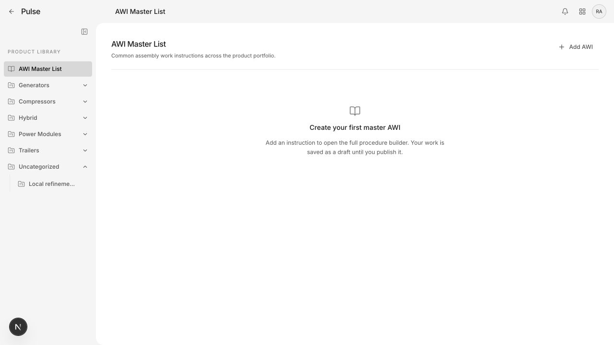
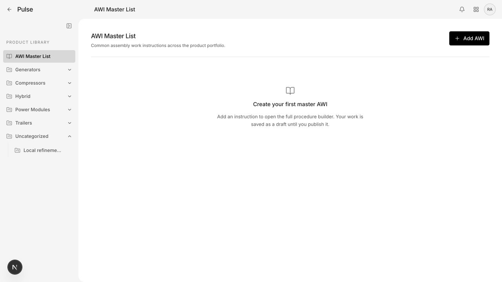
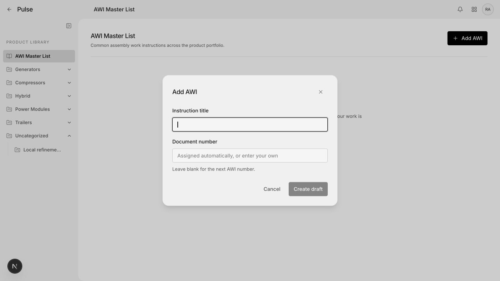
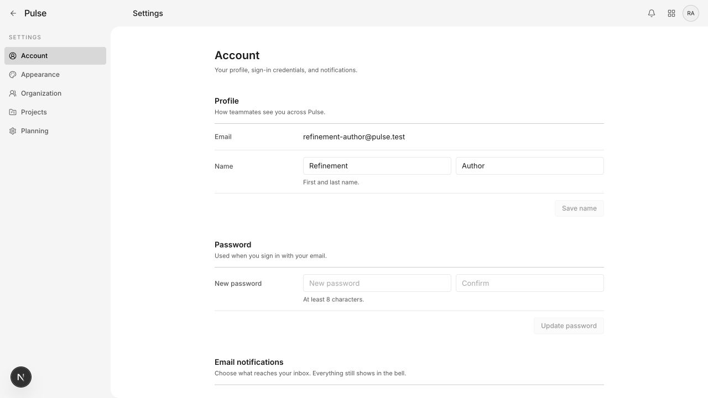
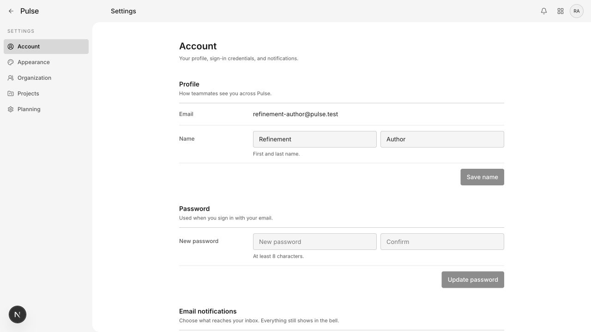
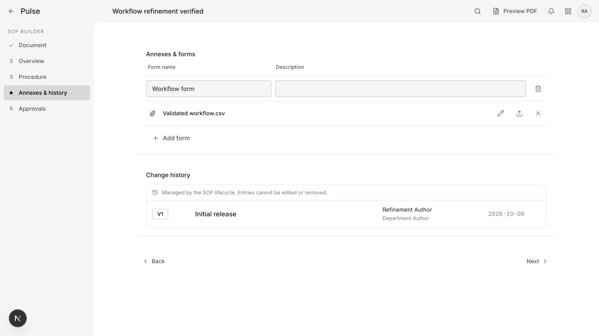
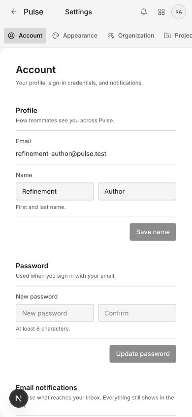

Shared buttons and fields
Phase 1 · SOP annexes, AWI creation and Account Settings · Local worktree only
One shared control stylesheet now owns shape, density, type, focus and state treatment for these migrated callers. Existing forms still own validation and saving.
Implementation and verification record
AWI primary action
Add AWI changes from a small ghost action to the shared filled primary button. Creation permissions and click behavior are unchanged.




AWI fields and actions
Field corners change from 12px to the shared 4px token. Labels, 36px controls, focus ring and button typography now have shared owners. The outer dialog remains unchanged for the next phase.



Account Settings
Fields grow from 32px to the standard 36px. Actions grow from 30px to 36px and share primary/disabled treatment. Old account-specific control rules were removed.




SOP annex controls
Fields share border, fill and focus styling; attachment icons use consistent 36px targets and 15px icons. Add form uses the shared action component. The smaller visual difference here reflects the existing near-match.



Settings at 390px
Shared controls retain the two-column name/password arrangement without page overflow. Before is the immediately preceding audit baseline at the same viewport.



Next phases remain: shared dialog chrome, status badges, headers/empty states, and broader Product/mobile adoption. Existing screenshots show unchanged local records. No delete, upload, password change, or new AWI was submitted.